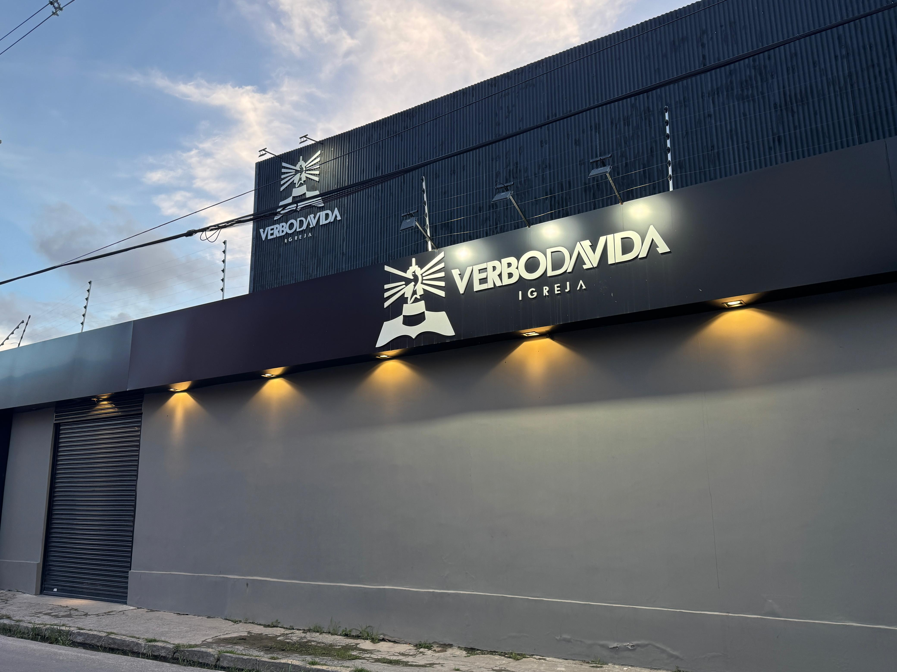

R. Rio Brígida, 350 - Ibura
Recife/PE.

Guia do Conferencista
Prepare-se para viver dias em chamas.
Confira as informações abaixo e aproveite todos os momentos.
Prepare-se para viver dias em chamas.
Confira as informações abaixo e aproveite todos os momentos.
Sua jornada no evento começa aqui. Este guia reúne tudo o que é essencial: cronogramas, avisos e insights exclusivos para você não perder nada. Informação na palma da mão para uma experiência fluida e completa.
Saiba onde ir, quando ir, o que esperar e como se preparar. Tudo isso concentrado neste guia pensado especialmente para você.

A Conferência em Chamas 2026 será realizada na Igreja Verbo da Vida Ibura. Acesse o mapa abaixo!

Para garantir a segurança e o bem-estar de todas as crianças, pedimos que leiam com atenção as orientações abaixo antes de chegar ao evento.
Todas as crianças devem ser levadas à sala por seus responsáveis e somente poderão sair com os mesmos ao final do culto.
Para o berçário e a sala de 2 e 3 anos, os pais devem entregar pertences devidamente identificados.
Informe ao professor caso a criança possua qualquer tipo de restrição alimentar.
Fiquem atentos ao telão. Caso necessário, os pais serão chamados pelo número da entrada.
Nos ajude a melhorar as próximas edições deixando seu feedback sobre sua experiência.
Responder Pesquisa